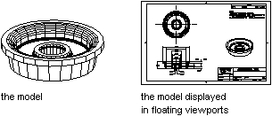

Autodesk AutoCAD 2021: ActiveX Developer's Guide > Define and Plot Layouts > About Viewports (VBA/ActiveX) >
To access the model in a PViewport object, toggle from paper space to model space using the ActiveSpace property.
As a result, you can work with the model while keeping the overall layout visible. In PViewport objects, the editing and view-changing capabilities are almost the same as in Viewport objects. However, you have more control over the individual views. For example, you can freeze or turn off layers in some viewports without affecting others. You can turn an entire viewport display on or off. You can also align views between viewports and scale the views relative to the overall layout.
The following illustration shows how different views of a model are displayed in paper space. Each paper space image represents a PViewport object with a different view. In one view, the dimensioning layer is frozen. Notice that the title block, border, and annotation, which are drawn in paper space, do not appear in the Model Space view. Also, the layer containing the viewport borders has been turned off.

When you work in a Viewport object, the ActiveSpace property must always be set to acModelSpace. When you are working in a PViewport object, you can set the ActiveSpace property to either acModelSpace or acPaperSpace, thus allowing you to switch between paper space and model space as needed.
PViewport object, Viewport object, and ActiveSpace property settings
| Type of viewport | Status | Usage |
|---|---|---|
| PViewport | ActiveSpace = acPaperspace | Arrange the layout by creating floating viewports and adding title block, borders, and annotation. Editing does not affect the model. |
| PViewport | ActiveSpace = acModelspace | Work within floating viewports to edit the model or change views. You can turn off or freeze layers in individual viewports. |
| Viewport | ActiveSpace = acModelspace | Split the screen into tiled viewports to edit different views of the model. |
In AutoCAD® ActiveX Automation, the ActiveSpace property is used to control the TILEMODE system variable. Setting ThisDrawing.ActiveSpace = acModelSpace is equivalent to setting TILEMODE = on, and setting ThisDrawing.ActiveSpace = acPaperSpace is equivalent to setting TILEMODE = off.
Similarly, the MSpace property is the equivalent of both the MSPACE and PSPACE commands in AutoCAD. Setting ThisDrawing.MSpace = TRUE is the same as using the MSPACE command: it switches to model space. Setting ThisDrawing.MSpace = FALSE is the same as using the PSPACE command: it switches to paper space.
In addition, you are required to use the Display method before setting the MSpace property to TRUE. The Display method initializes certain graphic settings that must be set before switching to model space. In AutoCAD this is done “behind the scenes.” However, in the ActiveX Automation interface, the programmer must take care of this initialization.